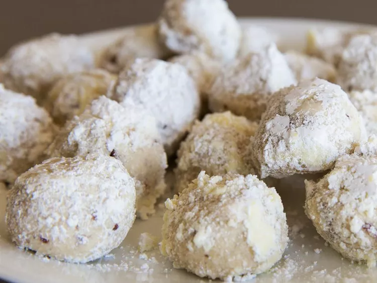

Snowballs

Description
Snowballs, a.k.a. Russian tea cakes or Mexican wedding cookies, are
melt-in-your-mouth cookies made with staple ingredients: butter, powdered
sugar, vanilla extract, flour, finely chopped nuts, and salt. The round
cookies are rolled in powdered sugar, so they sort of resemble snowballs.
The festive treat is often served during the holiday season.
Ingredients
- ⅓ cup powdered sugar, or more as needed
- 1 cup unsalted butter, softened
- ½ cup powdered sugar
- 1 teaspoon vanilla extract
- 2 ¼ cups all-purpose flour
- 1 cup very finely chopped pecans
- ¼ teaspoon salt
Steps
- Beat the butter, powdered sugar, and vanilla.
- Mix in the flour, pecans, and salt.
- Shape into balls and bake until set.
- Roll the warm cookies in powdered sugar.
- Let the cookies cool, then roll them in sugar again.